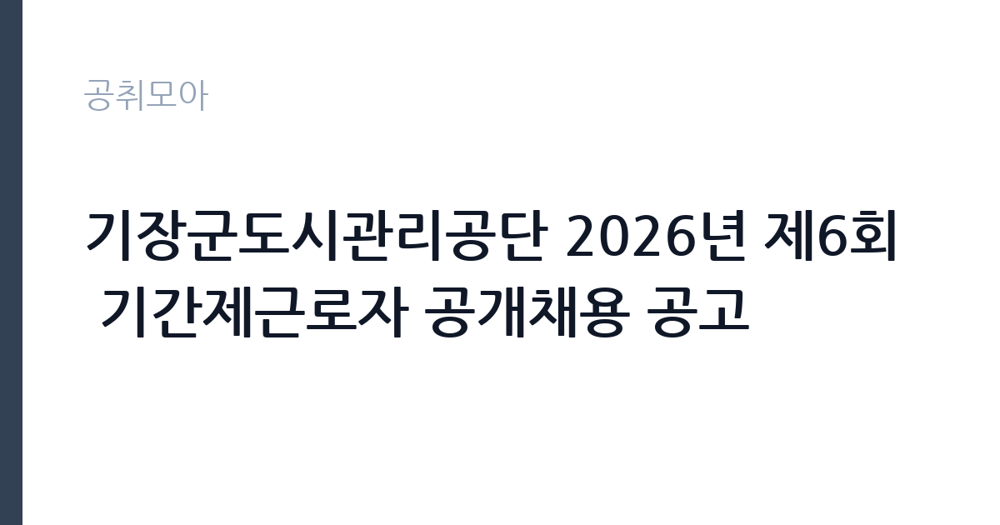

[공공기관] 기장군도시관리공단 2026년 제6회 기간제근로자 공개채용 공고
기장군도시관리공단 · 부산 · 마감 2026-10-12 (D-20) · 출처 나라일터

한눈에 보는 모집 조건
| 기관 | 기장군도시관리공단 |
|---|---|
| 공고명 | 기장군도시관리공단 2026년 제6회 기간제근로자 공개채용 공고 |
| 고용형태 | 기간제 |
| 근무지 | 부산 |
| 게시일 | 2026-09-22 |
| 마감일 | 2026-10-12 (D-20) |
지원자격, 이렇게 읽으세요
- 사원 37명
- 접수 ~2026-10-12 마감
- 세부 조건은 원문 공고문 확인
자격요건의 세부 내용은 채용공고문을 참고하시기 바랍니다. 37명 선발에 다양한 분야가 포함될 수 있으니 본인에게 맞는 분야를 고르시기 바랍니다. 운전실기가 포함된 분야가 있어 해당 분야 지원자는 운전면허와 실기 능력을 미리 점검하시기 바랍니다. 공고 기간과 접수 기간이 다르다는 점에 유의하시기 바랍니다.
이 공고의 포인트
첫 번째 포인트는 37명 선발의 대규모 채용이라는 점입니다. 모집 인원이 많을수록 서류전형의 문턱이 낮아질 수 있습니다. 두 번째로 운전실기와 면접의 2차 전형으로 실무 능력을 직접 평가하므로, 현장 경험자에게 유리합니다. 세 번째로 기장군도시관리공단은 체육시설과 공원, 주차장 등 군민 생활과 밀접한 시설을 운영하는 기관이라 안정적인 근무가 가능합니다. 부산 동부 지역 구직자에게 좋은 기회입니다.
전형은 어떻게 진행되나
전형은 1차 서류와 2차 운전실기·면접으로 진행됩니다. 접수 기간은 10월 2일부터 10월 12일까지이며, 공고 기간(9월 22일부터)과 다르니 혼동하지 마시기 바랍니다. 2차 전형은 10월 15일부터 10월 22일 사이에 개별 공지로 진행되며, 접수 인원수에 따라 면접 일정이 조정될 수 있습니다. 합격자 발표는 10월 26일입니다.
원문에서 확인한 전형 방식
기장군도시관리공단 공고 제2026-106호 기장군도시관리공단 2026년 제6회 기간제근로자 공개채용 공고 『군민이 신뢰하는 지속가능한 혁신공기업 기장군도시관리공단』과 함께할 역량 있는 인재를 모집합니다. ○ 공고기간 : 2026. 9. 22.(화) ~ 2026. 10. 12.(월) ○ 접수기간 : 2026. 10. 2.(금) ~ 2026. 10. 12.(월) ※ 공고기간과 접수기간이 다름 ○ 자격요건 : 채용공고문 참고 ○ 2차전형(운전실기 및 면접) ▷ 일 자 : 2026. 10. 15.(목) ~ 10. 22.(목) 시간 개별공지 ▷ 장 소 : 추후 개별공지 ※ 접수 인원수에 따라 면접일정은 조정 될 수 있음 ○ 합격자발표 : 2026. 10. 26.(월) ○ 근무일 : 공고문 참고 ※ 자세한 공고내용은 첨부파일을 참조하시기 바랍니다. 2026년 9월 22일 기장군도시관리공단 이사장
이런 분께 추천해요
- 부산·기장 지역에서 기간제 일자리를 찾는 구직자
- 운전실기와 현장 업무에 자신 있으신 분
- 대규모 채용의 기회를 활용해 공단에 입직하고 싶으신 분
지원 전 체크리스트
- 지원 분야의 자격요건을 첨부 공고문에서 확인했습니다
- 접수 기간(10월 2일~12일)과 공고 기간을 구분했습니다
- 운전실기 분야 지원자는 면허와 실기 능력을 점검했습니다
- 분야별 근무 조건을 공고문에서 확인했습니다
모집 일정과 제출 타이밍
공고 기간은 9월 22일부터 10월 12일까지, 실제 접수는 10월 2일부터 10월 12일까지입니다. 2차 전형은 10월 15일부터 22일 사이, 합격자 발표는 10월 26일입니다. 접수 시작 전에 지원 분야를 정하고 서류를 준비해 두시기 바랍니다. 운전실기 분야는 연습 시간을 확보하시기 바랍니다.
직무 이해하기: 공공기관
기장군도시관리공단 기간제근로자는 공단이 운영하는 체육시설과 공원, 주차장, 복지시설 등의 운영 지원과 환경 정비, 안내 업무를 맡습니다. 분야별로 세부 직무가 다르므로 첨부 공고문의 분야별 안내를 확인하시기 바랍니다. 부산 기장에서 근무하며, 공공기관 카테고리 공고입니다.
자기소개서 작성 팁
지원서류에서는 지원 분야와 관련된 경험(시설 운영, 운전, 안내, 환경정비 등)을 구체적으로 기술하시기 바랍니다. 군민을 응대하는 자리이므로 친절과 책임감을 보여주는 사례를 제시하시기 바랍니다.
면접 준비 포인트
면접과 운전실기에서는 현장 업무 수행 능력과 안전 의식을 평가합니다. 운전실기 분야는 실기 연습을 충분히 해두시기 바랍니다. 면접에서는 군민 응대 태도와 성실함을 보여주시기 바랍니다.
급여·근무조건 읽는 법
보수 수준은 원문 공고문에서 확인하셔야 합니다. 공단 기간제근로자의 급여는 공단 내규에 따른 시급 또는 월급제가 적용됩니다. 정확한 금액과 근무시간, 4대 보험 적용 여부는 분야별 안내에서 확인하시기 바랍니다.
자주 묻는 질문
- 공고 기간과 접수 기간이 다릅니까
공고 기간은 9월 22일부터 10월 12일까지이고, 실제 접수는 10월 2일부터 10월 12일까지입니다. 접수 시작일에 맞춰 지원하시기 바랍니다. - 2차 전형은 무엇을 봅니까
운전실기와 면접으로 진행되며 10월 15일부터 22일 사이에 개별 공지로 치러집니다. 분야에 따라 실기 내용이 다르니 공고문에서 확인하시기 바랍니다. - 모집인원이 몇 명입니까
사원 37명을 선발합니다. 분야별 인원은 첨부 공고문에서 확인하시기 바랍니다.
함께 보면 좋은 공고
[공공기관] 한국연구재단 PM(기초연구본부장) 초빙 재공고 — 마감 2026-10-13[공공기관] 칠곡경북대학교병원 2026년 9월 5차 임시직원 채용공고(물리치료사, 간호사, 주차, 조경관리) — 마감 2026-09-28[공공기관] [KDI국제정책대학원] 2026년 제10차 인턴직원 채용(경영기획) — 마감 2026-10-08출처: 나라일터 공개정보를 바탕으로 공취모아가 정리한 안내글입니다. 모집 조건·일정은 변경될 수 있으니 지원 전 반드시 원문 공고문을 확인하세요. 본 글은 정보 제공용이며 합격을 보장하지 않습니다.